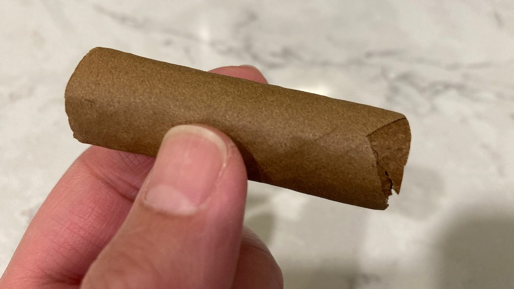
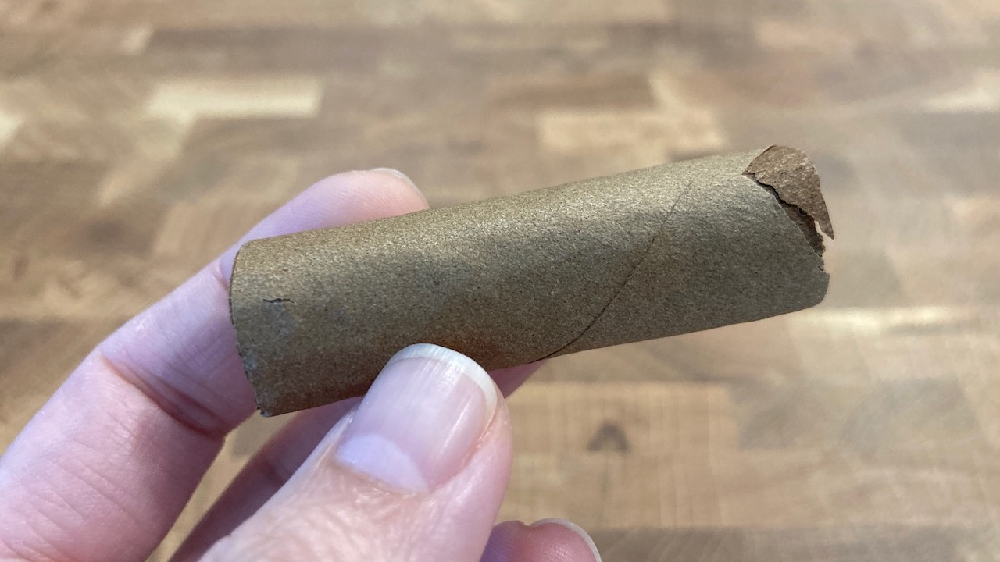
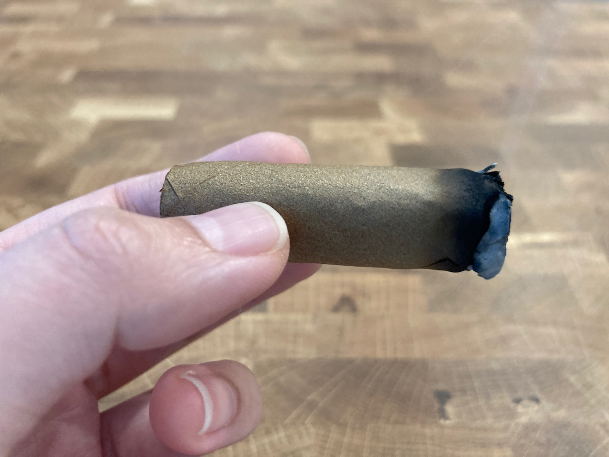
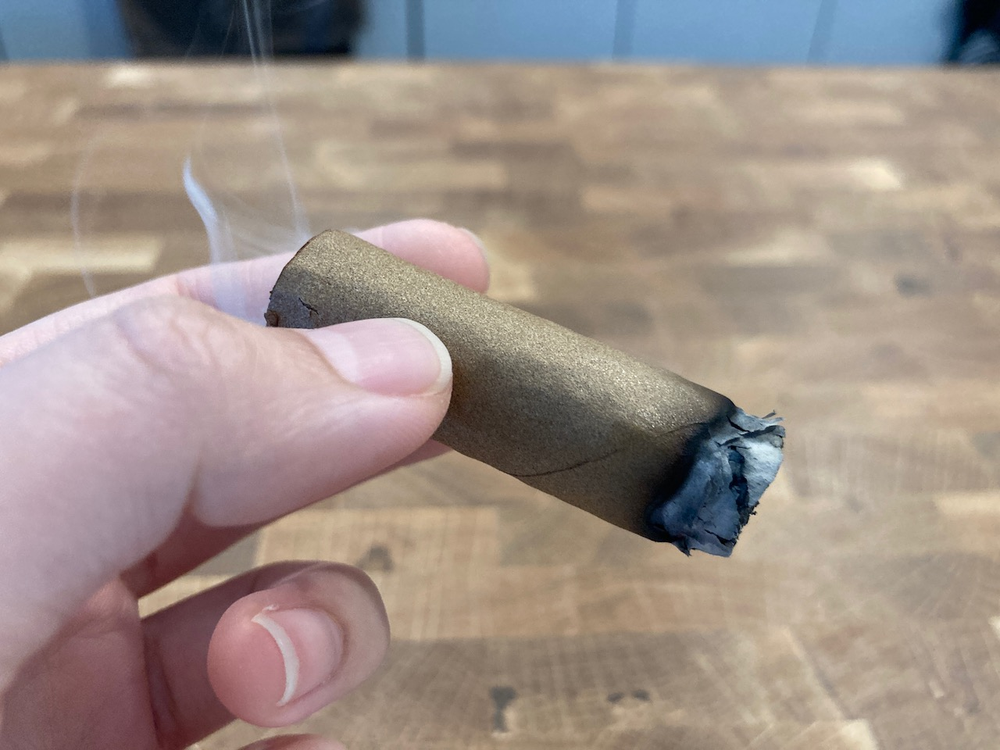
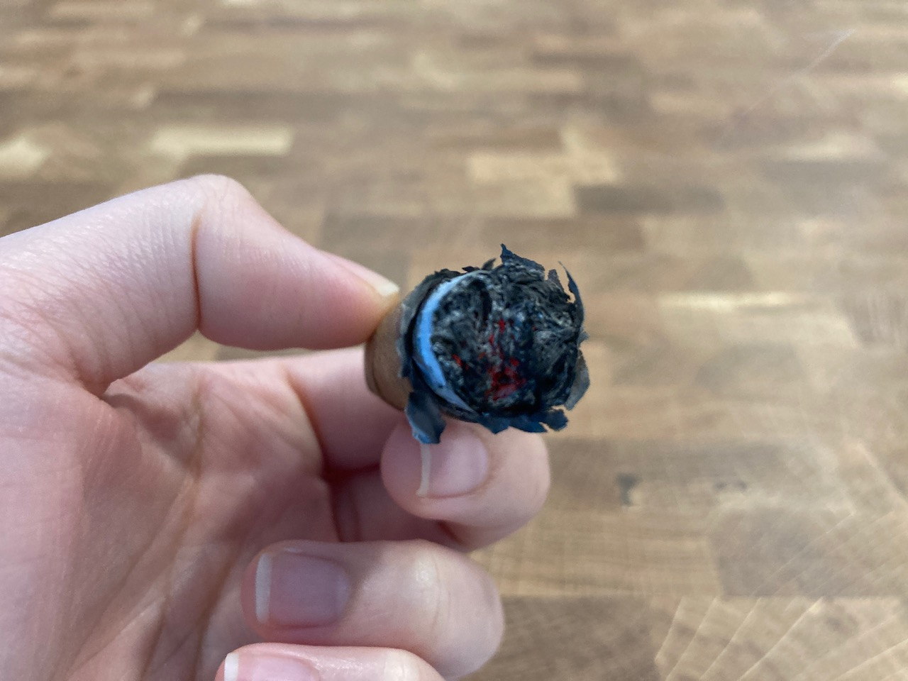
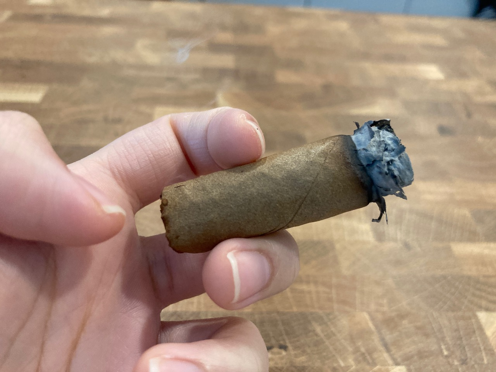
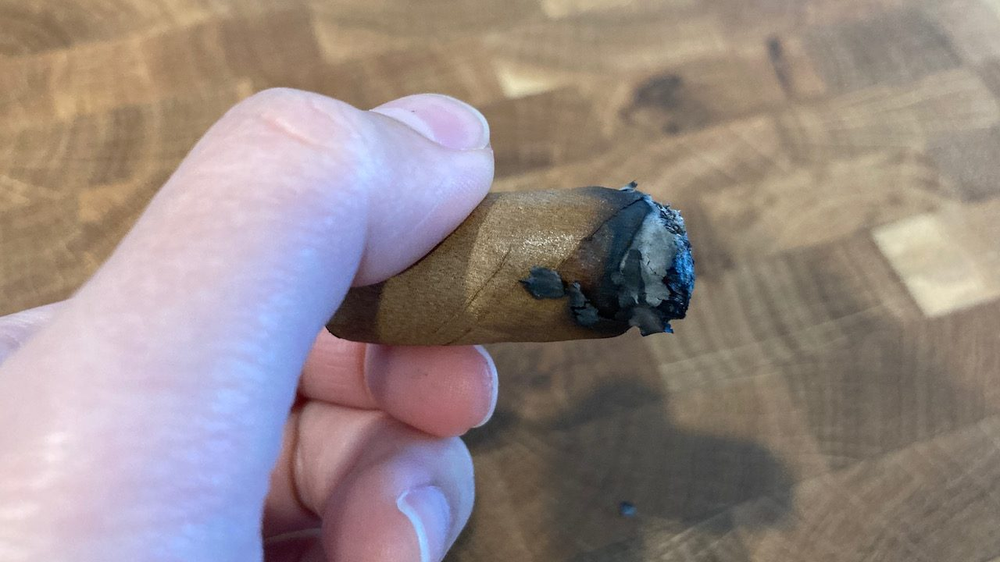
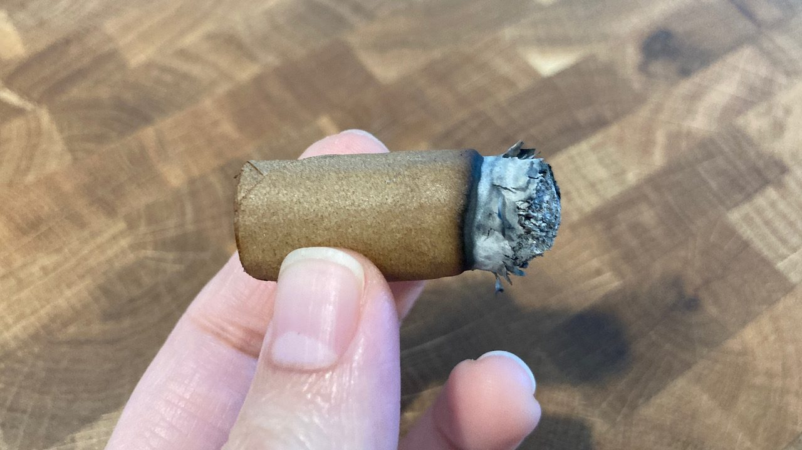
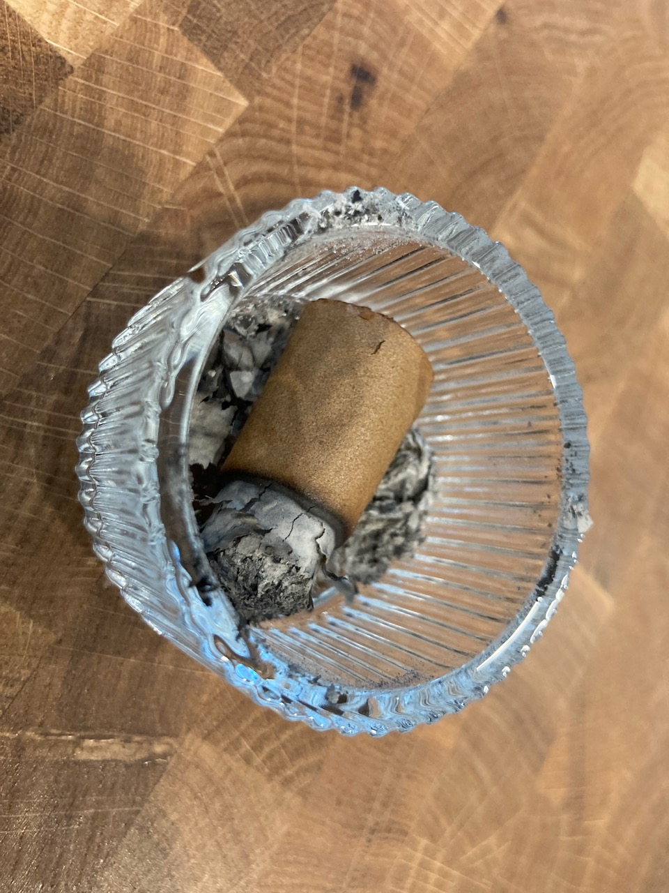

Cigar Log: Phillies - Blunt Strawberry 5pc (4 - Frozen Bottom Half)
As outlined in my previous post, this is the bottom half of 4th strawberry cigar from my Phillies cigar pack. This is the half that I tested out the cigar beetle treatment. I wanted to see if the flavour changes at all, and let's find out!

I could still smell strawberry from the wrapper, however, it's definitely not as strong as what I remembered from the first half or when this 4th stick was first taken out of the plastic wrapper. Here's the cigar's journey in detail:
- 3 days in freezer
- defrost and dry at room condition for 2 days
- back in cigar tube for another 2 days

The first few puffs was sweet, but I could not taste strawberry as usual. Since this is a very short half, the flavour just went out really quickly. Towards the end of last few puffs, it was just plain tobacco. Not much flavour to talk about here. :/
   
The wrapper of this half came slightly loose. I just used a regular glue to detached it back, but it basically unwrap itself pretty much towards the end. I burned myself slightly from the lighter when I was trying to relight this here. That was kinda stupid of me. 😅

Since this is a short smoke, I thought to try it in the kitchen of my apartment. It didn't turn out so well as Phillies cigar produces tons of smoke and ash went everywhere. The smoke time of this one was only slightly less than 10min. It was short, but not as enjoyable both in turns of the diluted flavour and the damage on the wrapper.

I pretty much ended it here because it started to burn my fingers. From this experiment, I think I will stay away from freezing my cigar as a preventative measure from potential cigar beetles because it does diminish the flavours.

Thank you for reading. If you like this post, please consider supporting this website and allow me to continue sharing my cigar journey with you. See you in the next post!